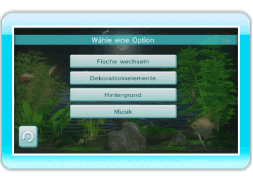
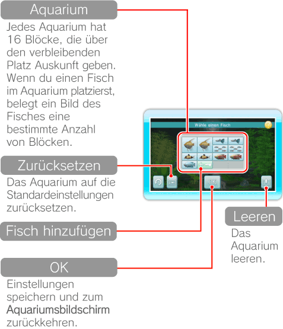
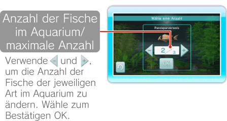
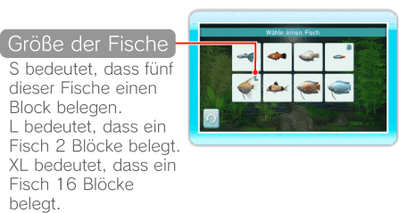
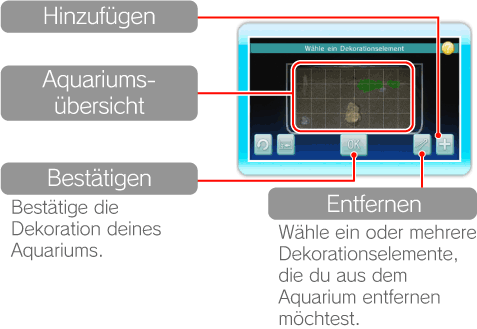
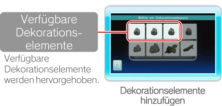
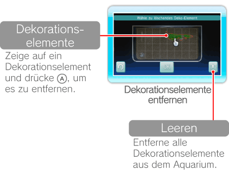

15 |
Aquariumseinstellungen |
 |
|

Zeige im Aquariumsmenü auf und drücke
Hier kannst du bestimmen, wie viele Fische von den zur Auswahl stehenden Arten im Aquarium angezeigt werden sollen. Die maximale Anzahl der Fische ist begrenzt und von deren jeweiliger Größe abhängig. Wenn du mit deinen Einstellungen zufrieden bist, wähle zum Bestätigen OK. 
Zeige auf einen Block, auf dem Fische abgebildet sind, und drücke  Zeige auf 
Ändere hier Dekorationselemente wie Hölzer und Steine sowie deren Anordnung im Aquarium. Wenn du mit deiner Dekoration zufrieden bist, wähle OK. Aquariumspflanzen werden automatisch für dich platziert. 
Zeige auf ein Dekorationselement und drücke  , um es aufzunehmen. Zeige auf die Stelle, an der du es platzieren möchtest und drücke , um den Vorgang abzuschließen. Dekorationselemente können mit , um es aufzunehmen. Zeige auf die Stelle, an der du es platzieren möchtest und drücke , um den Vorgang abzuschließen. Dekorationselemente können mit Hinweis: Wenn Dekorationselemente rot hinterlegt sind, bedeutet das, dass du sie an dieser Stelle nicht platzieren kannst.
Wähle , um Dekorationselemente hinzuzufügen oder   |
 |
 |
 |